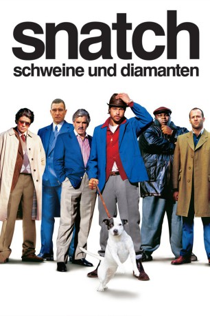

#2208 Snatch - Schweine und Diamanten
Alternativ: Snatch.
 
 IMDB-Wertung: 8.3 / 10
IMDB-Wertung: 8.3 / 10  IMDB-TOP-Platzierung: 105
IMDB-TOP-Platzierung: 105  Metascore: 55
Metascore: 55 
Diamantendieb und -kurier Franky Four Fingers, der im Auftrag des New Yorker Gangsters Avi in Antwerpen einen großen Stein geraubt hat, macht auf seinem Weg zurück nach Manhattan in London halt. Er soll kleinere Steine bei Avis Cousin Doug „The Head“ und anderen Juwelieren in Hatton Garden abliefern. Zur gleichen Zeit steht der unerfahrene Boxpromoter Turkish mit seinem Geschäftspartner Tommy vor seinem ersten großen Kampf, den er mit dem uneingeschränkten Boss der Gegend, dem Boxpromoter und Schweinefarmbesitzer Brick Top auf die Beine stellt. Ungünstig ist allerdings, dass Turkishs Kämpfer Gorgeous George zuvor bei einem anderen Fight von dem irischen Zigeuner Mickey O'Neil auf die Bretter geschickt worden ist. Kurzerhand setzen Turkish und Tommy ihren neuen Schützling Mickey für den abgekarteten Kampf ein ...
Jahr: 2000
Dauer: 102 Minuten
FSK: 16
Land: England Studio: SPETonspuren: DTS-HD - ,
Untertitel: Deutsch, Englisch,
Auflösung: 1080p (1920x1040) Größe: 12492 MB
Genre: Komödie, Krimi
Regisseur:  Guy Ritchie
Guy Ritchie
Drehbuch: Guy Ritchie
Soundtrack: John Murphy
Darsteller:
 Benicio Del Toro als Franky Four Fingers
Benicio Del Toro als Franky Four Fingers Dennis Farina als Cousin Avi
Dennis Farina als Cousin Avi Vinnie Jones als Bullet-Tooth Tony
Vinnie Jones als Bullet-Tooth Tony Brad Pitt als Mickey O'Neil
Brad Pitt als Mickey O'Neil Rade Serbedzija als Boris the Blade
Rade Serbedzija als Boris the Blade Jason Statham als Turkish
Jason Statham als Turkish Alan Ford als Brick Top
Alan Ford als Brick Top Robbie Gee als Vinny
Robbie Gee als Vinny Lennie James als Sol
Lennie James als Sol Ewen Bremner als Mullet
Ewen Bremner als Mullet Jason Flemyng als Darren
Jason Flemyng als Darren- Ade als Tyrone
- William Beck als Neil
 Andy Beckwith als Errol
Andy Beckwith als Errol- Nicola Collins als Alex
- Sorcha Cusack als Mum O'Neil
 Sam Douglas als Rosebud
Sam Douglas als Rosebud Adam Fogerty als Gorgeous George
Adam Fogerty als Gorgeous George Stephen Graham als Tommy
Stephen Graham als Tommy- Sid Hoare als Reuben
 Dave Legeno als John
Dave Legeno als John Eric Meyers als Avi's Colleague
Eric Meyers als Avi's Colleague- Jason Ninh Cao als Charlie
 Velibor Topic als The Russian
Velibor Topic als The Russian Liam McMahon als Gypsy Man
Liam McMahon als Gypsy Man- James Warren als Gypsy Man
- Tim Faraday als Policeman
- Tom Delmar als Thug with Head Crushed in Door , uncredited
 Christopher Fosh als Bricktop's Henchman , uncredited
Christopher Fosh als Bricktop's Henchman , uncredited Julianne Nicholson als Bookies Agent , uncredited
Julianne Nicholson als Bookies Agent , uncredited- Guy Ritchie als Man Reading Newspaper , uncredited
- Kriss Sprules als Crowd Member , uncredited
- Mike Reid als Doug the Head
- Jason Buckham als Gary
- Mickey Cantwell als Liam
- Teena Collins als Susi
- Charles Cork als MC
- James Cunningham als Horrible Man
- Mickey Dee als Jack The All Seeing Eye
- Goldie als Bad Boy Lincoln
- Ronald Isaac als Referee
- Chuck Julian als Michael
- Paul O'Boyle als Patrick
- Jimmy Roussounis als Paulie
- Sidney Sedin als Pauline
- Trevor Steedman als Bomber Harris
- Yuri Stepanov als Himy
- Peter Szakacs als Sausage Charlie
- John Taheny als Salt Peter
- Mick Theo als Mad Fist Willy
Datei: X:\2000\Snatch - Schweine und Diamanten (2000, FSK16, 1920x1040).mkv seit 21.10.2015
Festplatte: HD 1996-2002
 Es gibt insgesamt 82 Filme in der Gruppe '2000'
Es gibt insgesamt 82 Filme in der Gruppe '2000'